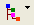
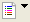
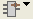
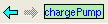

Internal Schematic Viewer Toolbar
Icon |
Description |
|---|---|
Set schematic view options:
Also see option descriptions in “Setup Schematic/Netlist Viewer Options Pane”. |
|
 |
Set display and sort options for the hierarchy tree. Note: if the hierarchy tree view is turned off, then the different schematic views are arranged in a tabbed format. |
 |
Set netlist view options. Select from:
|
|
Erase highlights. Dropdown list:
|
 |
Set the select environment options. Select from:
The select environment applies to the instances in the netlist, and allows you to extend net selection (highlighting) to equivalent nets in a referenced subcircuit. See Select Environment in the Internal Schematic Viewer and Figure 1 in “Selecting and Highlighting Equivalent Nets Using the Select Environment”. |
Open or close the Internal Schematic Viewer Find Bar. |
|
 |
Schematic view history. The arrows scroll through the schematic views that have been displayed. |